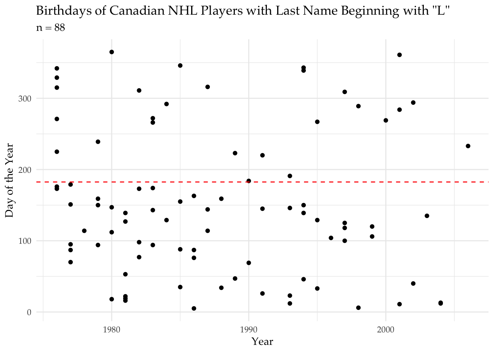
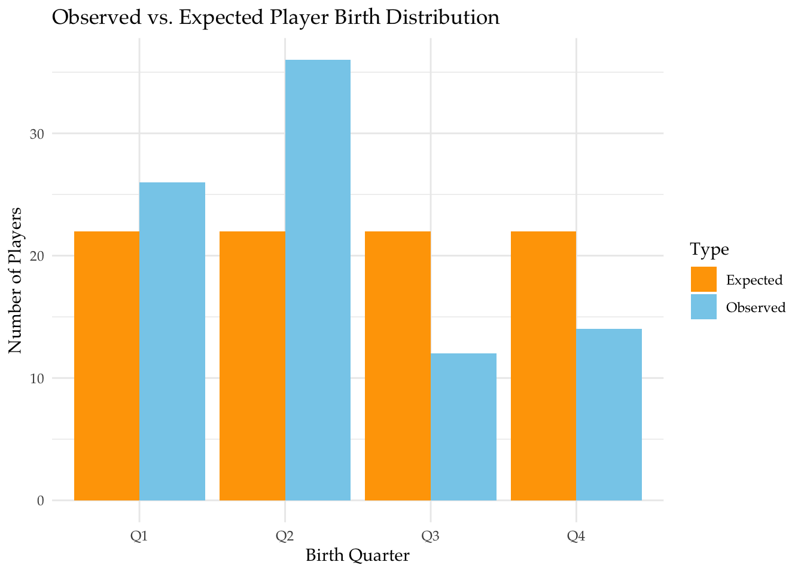
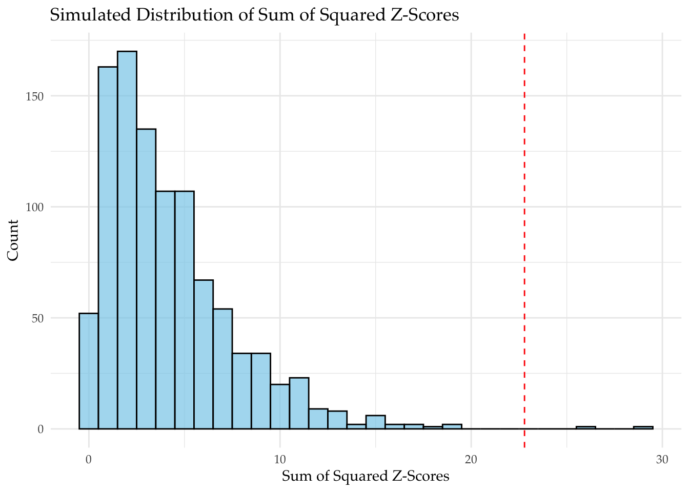

“Success” is a term often associated with hard work and talent, and in athletics, defines the career of an individual. In life, our society tends to measure people by how “successful” they are, comparing them to the wealthy and upper class. On the surface, success seems like a goal, something that can be achieved with just the right amount of dedication. Malcom Gladwell, a Canadian journalist, argues a different standpoint: success is determined by countless factors, many times out of an individual’s own control. One specific example mentioned in his 2008 book \(\textit{Outliers}\) revolves around Canadian hockey players, and how athletes born earlier in the year tend to become professional athletes more often than those born in later months. The main cause of this trend can be attributed to the January 1st age cutoff in junior hockey leagues, where players born in earlier months usually end up dominating those born later in the year due to physical differences that become magnified each season. In an age where athletics are more competitive than ever, it is extremely important to mantain equity in junior-level sports.
Narrowing in on this supposed trend among professional Canadian hockey players, this project will investigate the distribution of birthdays, examining whether or not they are evenly distributed throughout the year. Comparing birthdays of Canadian NHL players to simulated data where birthday distribution is fixed, we will be able to make a decision regarding how much of an effect it has on athletic success. Section 2 of this project will describe the methods and details of the data set being used, along with various variations and summaries of said data. Section 3 presents the results, using statistical inference to determine the implications it has on the overall investigation. The final section provides a conclusion to this project, summarizing the findings of the project, providing an insight into possible errors and future directions of this topics.
Methods
To properly test Malcom Gladwell’s claim regarding early birth month advantages in hockey, we must first examine real world data. To limit the sample size to a manageable number, all NHL players with a last name beginning with the letter “L” were extracted from HockeyDB, a public online database for professional hockey. After filtering the data set to only include recent Canadian players (after 1975), 88 athletes remained, with variables consisting of their name, position, birthday, birthplace, and seasons.
The visual below displays the birthday for each athlete in the data set, where the x-axis represents every year after 1975, the y-axis is the day of the year (1 - 365), and the red line marks the halfway point of the year:
Show the code
sim_df <-as.data.frame(sim) # making data table with the given simulated data "sim"sim_df <- sim_df |>mutate(sim_num =row_number()) |>pivot_longer(cols =-sim_num, names_to ="quarter", values_to ="count") |>mutate(z_score = (count-mu)/sigma, z_score_squared = z_score^2)sim_summary <- sim_df |>group_by(sim_num) |>summarize(sum_z_squared =sum(z_score_squared))p_value <-mean(sim_summary$sum_z_squared >= real_sum_z_sq)#Utilizing a given data-set "Bdays.recent"ggplot(Bdays.recent, aes(x = year, y = NumDays)) +geom_point(color ="black") +geom_hline(yintercept =182.5, color ="red", linetype ="dashed") +labs(x ="Year",y ="Day of the Year",title ="Birthdays of Canadian NHL Players with Last Name Beginning with \"L\"",subtitle ="n = 88" ) +theme_minimal(base_family ="Palatino")

Even before any statistical analysis, one can already observe more athletes having birthdays in the first half of the year. Though it may seem tempting to simply conclude Gladwell was correct by just looking at a visual representation of the data, the exact quantity of birthdays and probability of observing this exact data is unclear.
In order to further investigate Malcom Gladwell’s claim, the data was divided up so that each athlete’s birthday was assigned a value based off of the quarter of the year it fell in (1, 2, 3, or 4). Computing the total sum of athletes born in each quarter produced four values:
\(\bullet\) 26 in the first quarter \(\bullet\) 36 in the second quarter \(\bullet\) 12 in the third quarter \(\bullet\) 14 in the fourth quarter
To determine whether or not these values deviate significantly from the null hypothesis, where the probability of a randomly selected athlete being born in each quarter is 0.25, a hypothesis test will be conducted using 1,000 randomly generated simulations.
This data set is not a randomly selected sample of Canadian hockey players; it only consists of Canadian NHL athletes born after 1975 with a last name beginning with a specific letter. We threw out all players born before 1976, eliminating hundreds of points of data. Additionally, if we are analyzing how earlier birthdays result in more professional hockey players than later birthdays, but we only look at professional hockey players, it may not provide accurate information about Canadian hockey players as a whole and how birth month affects overall participation and advancement in junior levels of hockey. However, because a player’s last name should not correlate to the time of the year they are born in, and our sample size is large enough to determine patterns in hockey performance, we can still make the assumption that this sample should represent the larger population of Canadian hockey players.
Data Analysis
To determine whether or not the birthdays of professional Canadian hockey players are evenly distributed throughout the year, we can conduct a hypothesis test. The null-hypothesis, \(H_0\), states that birthdays should be evenly distributed, so that 25% of players have birthdays in each quarter. In order to make an adequate comparison between the real data and the simulated data, we will find the Z-score for each quarter, square them to ensure positive values and emphasize differences, and find the sum for each of the four quarters. This will give us a single value comprising of the sum of the squared Z-scores for each of the four quarters. We can repeat this process for each trial of the simulation.
The bar plot below compares the observed number of athletes born in each quarter to the expected number of athletes born in each quarter:
Show the code
# Create a data frame for observed vs. expected countsobserved_counts <-c(26, 36, 12, 14)expected_counts <-rep(88/4, 4)quarters <-c("Q1", "Q2", "Q3", "Q4")data_plot <-data.frame(Quarter =rep(quarters, 2),Count =c(observed_counts, expected_counts),Type =rep(c("Observed", "Expected"), each =4))#Plot the bar charggplot(data_plot, aes(x = Quarter, y = Count, fill = Type)) +geom_bar(stat ="identity", position ="dodge") +labs(title ="Observed vs. Expected Player Birth Distribution", x ="Birth Quarter", y ="Number of Players") +scale_fill_manual(values=c("orange","skyblue"),labels=c("Expected","Observed")) +theme_minimal(base_family ="Palatino")

Once again, the differences are very obvious from a visual standpoint, but no calculations have been made yet. To fully understand the significance of these values, we must perform statistical inference.
Under \(H_0\), each quarter should have a mean and standard deviation of: \[\mu = n \times p = 88 \times 0.25 = 22\] \[\sigma = \sqrt{\mu \times (1-p)} = \sqrt{22 \times 0.75} \approx 4.06\]
The Z-score for each quarter was calculated using the following equation, where X is the observed value for each quarter: \[Z = \frac{X - \mu}{\sigma}\] The Z-scores for each quarter of our data were as follows:
Quarter 2 immediately sticks out, with a Z-score greater than 3, but we’re looking at all four quarters, so we want a single value:
\[\sum Z^2 = (0.99)^2 + (3.45)^2 + (-2.46)^2 + (-1.97)^2 = 22.81\]
This value, 22.81, will be the observed statistic for our data. Right now, we do not know the significance of this value because we have nothing to compare it to. In order to generate enough data under the null-hypothesis to compare our observed statistic too, we simulated 1,000 identical data sets (88 players) with an equal probability of an athlete being born in each quarter. For each simulation, the Z-scores were computed for each quarter, and the sum of the squared Z-scores were calculated. Our final simulated data set contained 1,000 values, enough to form a distribution under \(H_0\).
The histogram below displays the distribution of the sums of the squared Z-scores from the simulations, with the red line marking our observed statistic:
Show the code
# Histogram of simulated sum of squared Z-scoresggplot(sim_summary, aes(x = sum_z_squared)) +geom_histogram(binwidth =1, fill ="skyblue", color ="black", alpha =0.7) +geom_vline(xintercept = real_sum_z_sq, color ="red", linetype ="dashed") +labs(title ="Simulated Distribution of Sum of Squared Z-Scores", x ="Sum of Squared Z-Scores", y ="Count") +theme_minimal(base_family ="Palatino")

One important thing to note is that the distribution is noticeably right-skewed. This is a result of squaring our Z-scores. When Z-scores are squared, it removes all negative values, setting a floor at zero. The floor effect then causes a right-skew which is then amplified due to the fact that squaring values emphasizes differences.
Our final step is to find a p-value for our data set, which is the probability of seeing our observed statistic or greater under the null-hypothesis. If \(p < 0.05\) we will reject \(H_0\). Because the distribution of the sums of squared Z-scores is not normal, we cannot calculate the p-value using methods for a normal distribution. Instead, the following calculation was used:
With a p-value of 0.001, this means that the probability of observing a sum of squared Z-scores of 22.81 or greater under the null-hypothesis is 0.1%, which is extremely low. Because \(0.001 < 0.05\), we reject \(H_0\), with enough evidence to suggest that the distribution of birthdays for Canadian athletes in the NHL is not uniform.
Summary
The goal of this project was to analyze the distribution of births among Canadian NHL players, following Malcom Gladwell’s claim that athletes born earlier in the year are more likely to become professional hockey players. Utilizing a sample of Canadian NHL players with a last name beginning with “L”, we were able to use simulations to test whether or not certain quarters of the year had an over-representation of births than others, comparing the data to simulated values where births were evenly distributed.
After performing a hypothesis test, we concluded that our data significantly deviated from the simulated data, where we only saw a value greater than our observed value once out of 1,000 simulations (\(p = 0.001\)). Though this does not tell us specifically that those born earlier in the year are more likely to become professional hockey players, it heavily suggests that there is not an equal distribution of birthdays across Canadian NHL players. Applying this information to our specific example, where there were more births in the first half of the year than the second half of the year, we can conclude that individuals born earlier in the year are likely over-represented, supporting Malcom Gladwell’s claim. As stated in the introduction, this is likely a combination of various factors stemming from Canada’s age cutoff for junior level hockey leagues.
Though our findings appear very strong, it is important to consider the limitations of this project. Because our data set only included athletes with last names beginning with a specific letter, it was not a random sample. Additionally, because only NHL players were included, there is no way to take into account all of the Canadian hockey players who never made it to the professional level. Improving our data to account for these factors could have a significant impact on our findings, allowing us to work with a greater number of both professional and developmental level hockey players.
There are various other ways this project can be expanded in the future. One simple way to gather more detailed results is to increase the number of simulations from 1,000 to 10,000. This will lead to a more accurate p-value, especially because we found that our observed data is very unlikely under a uniform distribution of births. With such a low probability, it is completely possible to compute a p-value of 0 with only 1,000 trials. Additionally, we can repeat this using players with last names beginning with different letters and include data prior to 1976 to see if we observe similar results. Another way to expand on this project would be investigating the ages at which athletes born earlier in the year begin to pull ahead, examining data from each year of junior level hockey in Canada. Finally, it would interesting to compare Canadian data to similar data sets from other parts of the world, adjusting to reflect the different age cutoffs for each country.
Overall, while the time of year that an athlete is born may have some effect their success as they develop, it is important to consider how other external factors also promote professional opportunities, such as a player’s access to sufficient training and socioeconomic background.